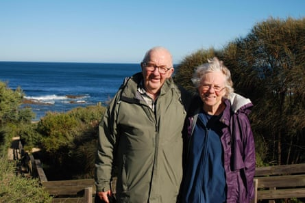
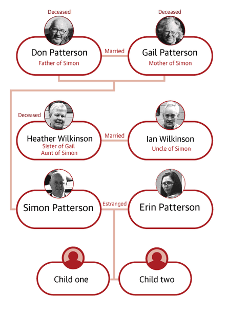
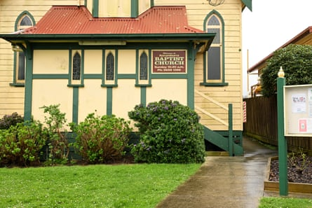
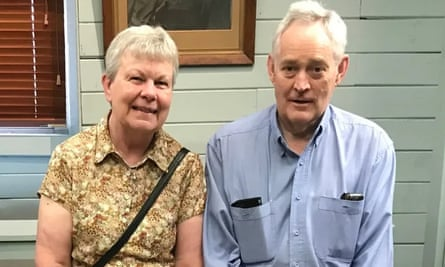

Several hours after a person eats death cap mushrooms and becomes violently unwell, there is a period of relief. They feel as if they are improving. They are not.
This pause soon gives way to “a relentlessly progressive and quite frightening rapid deterioration into multiple organ failure”.
“The body’s different organ systems essentially shut down and the patient is extremely unwell, at a very high risk of dying,” the director of intensive care at Austin Health, Dr Stephen Warrillow, told Erin Patterson’s triple murder trial.
At times it seemed almost an afterthought, during an extended trial subject to ghoulish fascination , that Don Patterson, Gail Patterson and Heather Wilkinson died terrible deaths.
Ian Wilkinson barely escaped the same fate, but he was watching in court as Warrillow gave his evidence. Not five metres to Ian’s left was the woman who allegedly tried to kill him.
- Sign up for Guardian Australia’s breaking news email
There was no dispute that Patterson poisoned him and the others with death cap mushrooms, that the blame for their deaths fell at her feet. But had she meant to do it?
On Monday, a Victorian supreme court jury convicted Patterson of murdering her estranged husband’s parents, Don and Gail Patterson, and his aunt, Heather Wilkinson. The 12-person jury also found Patterson guilty of attempting to murder Heather’s husband, Ian Wilkinson .
The difficulty in proving Patterson’s intent – as the defence made sure it repeatedly emphasised – was that the prosecution could not say why she killed three people and tried to kill a fourth.
Despite the law being clear that no motive was required, this was no small thing for a jury: how to be satisfied beyond reasonable doubt that a mother of two, with no criminal history, is guilty of triple murder, when nobody can tell you why she did it?
Don and Gail Patterson died in hospital after eating the beef wellington meal served by Erin Patterson.
Patterson said the deaths were due to the most trivial thing, a slight reorganisation of her pantry. At some point, she put foraged mushrooms that she did not realise were death caps in the same Tupperware container as mushrooms bought from an Asian grocer.
She started foraging around the start of the pandemic, Patterson told the jury, and continued the habit for the next three years every autumn, picking mushrooms that grew on her properties and in public spaces including botanic gardens.
Patterson bought a dehydrator in April 2023 because she loved wild mushrooms, but they didn’t keep for long. Drying them meant they would last longer.
A few days earlier, Patterson said, she bought dried mushrooms from an Asian grocer in Melbourne’s eastern suburbs. They were too “pungent” for the dish she was making, so she removed them from their packet, and put them in a different Tupperware container.
This container was stored in her pantry at her home in Leongatha in May and June. At about this time, Patterson said she put wild mushrooms that she foraged and dehydrated in that same container.
Patterson said none of this was clear to her until Simon confronted her in Monash hospital three days after the lunch, and asked whether the dehydrator was “how you poisoned my parents”.
“Did that comment by Simon cause you to reflect on what might have been in the meal?” Patterson’s barrister, Colin Mandy SC, asked her on 4 June.
“It caused me to do a lot of thinking about a lot of things, yeah,” Patterson answered.
She went on: “It got me thinking about all the times that I’d used [the dehydrator] … how I had dried foraged mushrooms in it weeks earlier, and I was starting to think, ‘what if they’d gone in the container with the Chinese mushrooms? Maybe – maybe that had happened’.”
Patterson started to feel scared, responsible, worried her children would be taken away, because “Simon seemed to be of the mind that maybe this was intentional”, the court heard.
This conversation with Simon was the fulcrum, where the wheel started to turn, as Mandy put it, where Patterson decided to cover up her foraging, the Covid habit turned deadly.
Illustration: Guardian Design
She dumped the dehydrator the next day, lied to police repeatedly in an interview about foraging and the dehydrator three days later still, and remotely reset her phone to conceal evidence of both those parts of her life from homicide squad detectives, the court was told.
But there was a significant point of contention about Patterson’s version of events: Simon said the conversation at Monash hospital never happened.
According to the prosecution, Patterson bought the dehydrator as a murder weapon on 28 April 2023, soon after she travelled to the township of Loch to source death cap mushrooms.
She bought it for the sole purpose of disguising death caps so she could fatally poison the lunch guests, not to preserve wild mushrooms so she could cook with them year-round, the court heard. This was no pantry error, the prosecution said, but a murderous plot, weeks in the making.
Even the fact Patterson was in Monash hospital was, on the prosecution case, a ruse: she was pretending to be sick so as not to arouse suspicion about why the others were fatally unwell, and she was not.
A lot turned, therefore, on what the jury made of Patterson’s account about these weeks before the lunch.
What in general did they make of her, a self-confessed liar, urging them to believe her now? Is someone more believable once they admit their untruths? Or are they damned as a liar?
Mandy told the jury that Patterson was not on trial for lying, but the conclusions they made about her lying could help them reach a verdict.
Patterson’s evidence bookended by tears
Patterson could have taken the stand regardless of the advice of her lawyers. There was much about her extended period in the witness box that may have caused them anxiety.
Her eight days in the stand left their mark on Patterson; she was in tears soon after she started, and in tears as she ended, but it did not seem to harm her case. Whether she came out, as Mandy said, unscathed, or as the prosecutor Nanette Rogers SC said, with yet more lies attached to her name, was a matter for the jury.
What certainly emerged was a fuller picture of her, edges and shape, the third dimension to the flat picture of her seen on screens and in the dock.
Patterson said she was a binge eater, who had struggled with her body image since she was a child whose mother forced her to weigh herself, she said. The day of the lunch, she binge ate two-thirds of an orange cake brought by Gail, then vomited it up – a plausible explanation, the defence said, for why she was less unwell than her guests later.
She also described regularly consulting “Dr Google” to understand health ailments, and admitted to having overstated health complaints including cancer to elicit sympathy.
Patterson spoke of the camping trips and the religious epiphany at Ian’s church that occurred in the years after she met Simon, while they were working for the same suburban council.
She had owned a bookshop in Western Australia, worked as an air traffic controller, then had no need to work at all because of inheritances worth several million dollars. Her plans for 2023 included studying a bachelor of nursing and midwifery, but she had deferred before the lunch.
Nothing appeared to define her more than motherhood, however: her 16-year-old son and 11-year-old daughter were the centre of a universe that included their doting grandparents, Don and Gail.
Patterson’s five days of cross-examination were punctuated by revelations, but without moments of genuine shock. Rogers said the “starkest lie” which emerged was that Patterson claimed she was having gastric bypass surgery, when she had no such appointment.
There was probing of whether Patterson was “two-faced” – the loving daughter-in-law who helped in church every second Sunday and stayed part of her estranged husband’s family eight years after they separated, and the woman who vented “fuck ‘em” about the same family to her friends online.
The Patterson family attended Korumburra Baptist church.Photograph: James Ross/AAP
More may have emerged if so many of the questions asked of Patterson did not end with an invitation for her to give a single word response. Rogers asked Patterson more than 200 questions that ended with the words “agree or disagree” or “correct or incorrect”, and others still ended with just one of those words.
Patterson was not asked whether she tried the duxelles after, in her telling, she accidentally added death cap mushrooms to a bland dish. Is this not what any home cook would do, after adding an ingredient to improve a meal? Mandy told the jury they could infer she did just that.
Indeed, many details about how Patterson said this accident happened remained inexact, including when and where she picked the mushrooms; why she had not used them in other meals before, given they were there for some weeks and her love of mushrooms; why she combined different types of dried mushrooms in the same container, including button mushrooms from Woolworths, when one of these varieties, had been too “pungent” for a dish; what exactly did the container look like, and could Patterson identify it, given police took dozens of photos of her kitchen.
There were other questions, too, that were not asked about Patterson’s conduct after the lunch.
Patterson was asked countless times about her bowel movements, the phrase, “poo your pants” and variances a common occurrence, but not about why she was wearing white pants at a time she said she was suffering diarrhoea.
Patterson was the final witness in her trial. Her estranged husband, Simon, was the first. Between them were about 50 others, police and doctors and family and mycologists, some linked to the case in intimate, life-altering ways, others seemingly perturbed about being dragged into it.
Patterson watched these witnesses closely from her seat in the dock, mostly with her chin slightly raised, reading glasses on or close by, ready to be used should an exhibit appear on the screen to her left.
From her seat, Patterson could see through a large window, covered with translucent blinds, facing south. As the trial dragged on through the end of autumn and into winter, she could watch as leaves withered, turned the colour of the terracotta roofs below, and were blown loose.
Occasionally, one flitted against the window, an almost startling reminder that life outside court number four went on.
A travelling circus
Beyond Morwell is the Hazelwood open cut coalmine, and further still, the foothills of the Strezlecki Ranges. They are a barrier between the Latrobe Valley, where the trial was held, and South Gippsland, the region where Patterson and the guests are from.
There is little in common between Leongatha, where Patterson lived, and Morwell, where she opted for the trial to be held, despite them being only 60km apart.
As there was barely a link between the towns, there was a sense that the trial was a travelling circus: everybody would soon pack up and leave, without any lingering sense of loss or trauma in Morwell.
And a circus, at times, it was: people were chased out of court after trying to take selfies with Patterson, or, at one point, reaching out to touch her hand. Another man was marched out after directing a protest at Justice Christopher Beale. An article that was to be about the “media circus” breached a suppression order, as did multiple other publications.
Other media outlets, and a juror who was dismissed, could yet face further proceedings resulting from the trial.
On the days Patterson gave evidence, a handful of people waited outside from about 6.30am, four hours before court started, in single-digit temperatures.
Many of those who crammed into court throughout the trial appeared not unlike Patterson herself: middle aged women with an interest in true crime.
Some watchers were obsessed because it was an alleged poisoning case, others because they were from South Gippsland and wanted to see it.
There was a man with rainbow coloured hair and a matching coat, who runs a business giving people “unicorn manes”. A woman who runs a popular true crime Instagram account shared the front row with novelist Helen Garner.
There was no other way for the public to follow the case: you had to be in that room, or otherwise dip into the seemingly endless content produced about it (almost all of those in the gallery did both).
It is hard to know exactly what made it so popular. It would perhaps be easier to identify what wasn’t compelling about it.
Surely, a significant element was that this was a woman accused of the unthinkable and judged on different standards, someone who in public sentiment did not grieve in a genuine way, who must be mad or sad or bad or some combination of the three.
Of the roughly 40 seats inside court, about half were free for the public, with the rest taken by the Patterson and Wilkinson families, media, and other people associated with the case. Only one supporter of Patterson, her friend and power of attorney, regularly attended court.
Heather Wilkinson and her husband, Ian Wilkinson, the sole surviving lunch guest.Photograph: Facebook
Patterson spent week nights inside the Morwell police cells. Every day of the trial, she walked about 30 steps along a passageway, no wider than three metres, from the back of the station into the court building.
Above her, and to her right, was the patio outside court, where feverish coverage whirred on: witnesses and lawyers and the detective in charge of the investigation, Stephen Eppingstall, ran a gauntlet of photographers and camera operators to get into court every day; reporters completed live crosses; court watchers, having saved a seat upstairs, ducked out for a final smoke before the hearing started.
Patterson walked in open-toed rubber sandals, a seemingly curious choice for late autumn and winter in the Latrobe Valley, until you considered how rare it was for her to be outside.
On Fridays, she was taken by prison van from Morwell to the Dame Phyllis Frost Centre, a prison on the dusty and flat western outskirts of Melbourne.
As she left Morwell, and when she returned on Mondays, photographers reached high to firmly press their lenses against the van’s tiny compartment windows, not knowing which of these compartments Patterson was in.
After the jury retired to consider its verdict, temporary fencing wrapped in black plastic appeared around Patterson’s house, where the lunch was held.
It seemed an odd thing to have preoccupied Patterson when she was awaiting a verdict on charges of triple murder, to take steps to preserve a sliver of privacy should she walk from court, but the case is nothing if not odd.
On Monday, she again made that walk from the police station into court along the concrete passageway, took the lift to the first floor, and, flanked by two corrections officers, stepped through a door into the dock.
She would not have to wait long to learn if the jury would send her back the way she came, or whether she would be free to walk into court, to head back to her dream home, to tend her three acres behind her rudimentary fence.
Ian Wilkinson, the only guest who sat for lunch at Patterson’s dining table on 29 July 2023 and lived, the Baptist Church pastor who stared death in the face, did not come to court to see it.